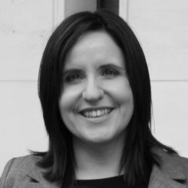

What, where, when?
foss-north will organize a day about IoT and Security held at WTC in Stockholm on October 21.
Tickets will be available soon.
Speakers
We have already confirmed the following great speakers and are processing all the great talk submissions to the call for papers.

Patricia Aas
Election Security: Introducing Real Transparency
More and more we see technology, both hardware and software, intersect with fundamental issues like privacy, democracy and human rights. The opaqueness of tech makes it a handy instrument of oppression and manipulation.
How could a government use tech to rig an election and why would they? How can we re-engineer the electoral process to protect it's integrity, and how can we communicate those changes to the population? What makes elections so hard to protect?
Patricia Aas is a C++ programmer who's been programming for close to 20 years. She's worked on two browsers (Opera and Vivaldi) and on embedded TelePresence endpoints for Cisco. Last year she co-founded TurtleSec, which is a company that operates in the realm of Application Security, where she does consultancy and training. She's also involved in the #include organization hoping to improve diversity and inclusion in the C++ community.
Claes Jakobsson
The O in IoT should stand for Open
During the past years we’ve been developing the Botani.st platform for urban farming. Since we don’t want our customers to end up with a plastic brick when we go bust one design philosophy has been to open as much as possible from protocols to hardware to software. And since we rely on so much open source in the project itself it’s not more than fair.
This talk will cover how we’ve designed the platform and some of the choices needed to balance openess, price and usability.
Claes has been hacking and talking open source the past 20 years and co-founded and runs a few user groups such as FOSS-Sthlm and Stockholm PostgreSQL User Group. He spends his day hacking on various things over at Trustly but not-so-secretly loves embedded and hardware thus starting the Botani.st project in 2014-ish to solve the mystery of dying plants.
Daniel Stenberg
curl runs in all devices
curl is possibly the world's most widely used software component with an exsimated over six billion installations. Daniel will talk about the process of getting there, some of the challenges with making it fit for tiny devices and an insight into how the team works to maintain quality, performance and the right features for a connected world.
Daniel Stenberg is the founder and lead developer of curl. He works on HTTP implementations and Internet protocols since over twenty years. He has been involved in the HTTPbis working group in IETF for ten years and worked on the HTTP stack in Firefox for several years at Mozilla. Author of the widely read documents "HTTP2 explained" and "HTTP/3 explained". Employed by wolfSSL.
When not in front of a computer, Daniel likes to play floorball and spend time with his family.
Sponsors
We are currently looking for sponsors. You can find out more in our event sponsorship prospectus. Contact us at info -at- foss-gbg.se if you are interested.
About
foss-north is a free / open source conference covering both software and hardware from the technical perspective. We provide a meeting place for the Nordic foss communities and will bring together great speakers with great audiences.
We are constantly looking for partners, speakers, sponsors, and events around FOSS in the Nordic region. If you want to be listed here, please contact us at info -at- foss-gbg.se .
Don't miss to check out our other events.